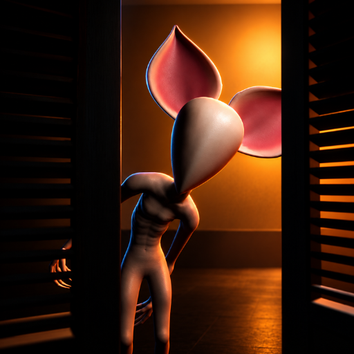

Anthony Taravella Portfolio
agtara317@gmail.com · 718-608-4053
Solo game developer building on Roblox, UEFN, and Unreal Engine 5. I take every game from idea to launch myself — design, 3D art in Blender, gameplay programming, and release.
Roblox Games
Survive the River — a co-op boat survival shooter. Up to four players ride a boat downriver through themed biomes, shooting enemies attacking from the water, land, and sky while upgrading their guns and boat mid-run.
More info

Silence — an escape-horror game across three maps: The Hallways, The Depot, and The Farm.
More info
Fortnite Profile

Fortnite Developer Profile — my published UEFN/Fortnite work. I've been developing and shipping games on Fortnite for 4 years, building gameplay systems in Verse and designing every island to comply with Epic's content guidelines.
- 8K+ followers
- 7.2M minutes played
- 37K favorites
- Peak CCU of 1.35K players